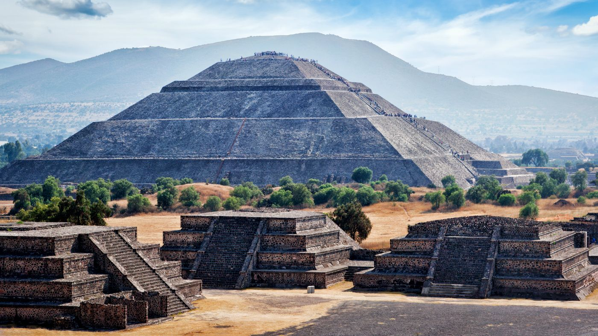

Élőhelyük
Az aztékok mezoamerikai indiánok, akik a mai Mexikó középső és déli részén az amerikai kontinens egyik legkiterjedtebb bennszülött civilizációját hozták létre a 14–15. században, a Mexikói-öböl és a Csendes-óceán között.
Birodalmukat katonai hatalomra alapították. Magukat mexikáknak nevezték, a legenda egyik változata szerint Vitzilopocstli, a törzs főistenének, és egyúttal a harcosok patrónusának utasítására.
Az "azték" név a monda szerinti előző hazájukra, Aztlánra utal.

Azték társadalom
A 15–16. századra az aztékok egy hatalmas, despotikus államot hoztak létre, jelentős katonai erővel. A mai Közép-Mexikó szinte minden népét leigázták, így végül 4-5000 kisebb adófizető állam fölött uralkodtak. Ezeket ők látták el nyersanyaggal és különböző árucikkekkel. A harc lételemük volt. Minden felnőtt férfi számára kötelező volt a hadba vonulás, a fiúgyermekeket pedig már ötéves koruktól katonai iskolákban nevelték. 